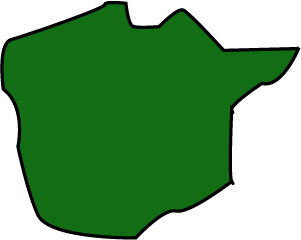
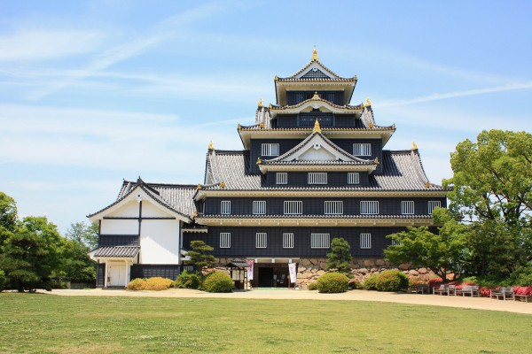
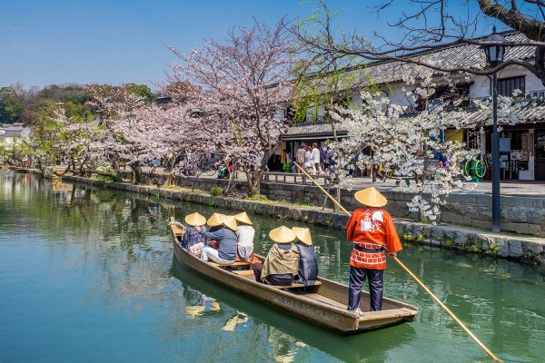

Okayama is located in the heart of Western Japan and offers smooth access to many major tourist destinations.
Throughout the year, Okayama is blessed with minimal rain and a mild climate, earning it the nickname the "Land of Sunshine."
Grown in Okayama’s sun-soaked earth, the local fruits offer unparalleled flavor, fragrance, and sweetness. In northern Okayama, visitors can enjoy beautiful nature by experiencing a wide variety of natural landscapes that change with the seasons, and numerous onsen (hot springs).
In southern Okayama, the many beautiful islands dotting the Setonaikai (The Inland Sea) and the sun setting among the waves are just a few of the superb views visitors can find.
(Source: Okayama Official Tourism Guide)
Prefecture Image
Okayama Korakuen Garden and Okayama Castle
Exploring Okayama
Kurashiki Bikan Historical Quarter
